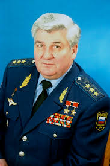

Знаменитые люди города Брест
Пётр Климук

Первый белорусский космонавт, ученый в области
технических наук, дважды Герой Советского Союза. Родился в д.
Комаровка Брестского р-на в 1942 году. В 1965 году Климук зачислен в отряд космонавтов. Прошёл полный
курс общекосмической подготовки и подготовки к космическим полётам
на кораблях типа «Союз» и орбитальных станциях типа «Салют».
Совершил три космических полёта в качестве командира экипажа.
Владимир Карват
Военный лётчик первого класса,
подполковник. Погиб 23 мая 1996 при выполнении учебно-тренировочного
полёта, отведя падающий самолёт от населённого пункта. 21 ноября 1996
был посмертно награждён званием «Герой Беларуси».
Юлия Нестеренко
В легкой атлетике периода современной Беларуси всего четыре
Олимпийских чемпиона. Одним из самых неожиданных, тем более
ценных, из них является спринтер Юлия Викторовна Нестеренко.
Известная белорусская спортсменка Юлия Нестеренко (в девичестве –
Барцевич) родилась 15 июня 1979 г. в Бресте.
После золота в Афинах Александр Лукашенко вручил спортсменке
почётную награду за заслуги перед Родиной – Орден Отечества третьей
степени.
30 сентября 2004 г. Юлии Нестеренко, было присвоено звание
"Почетный гражданин города Бреста", а спустя пять лет в 2009 г., ей
было присвоено звание "Почетный гражданин Брестской области".
Юлия Нестеренко – преподаватель-методист Брестской областной
высшей школы в 2001–2002 гг. Спортсмен-инструктор Министерства
спорта и туризма Республики Беларусь с 2002 года. Член Союза
спортсменов Республики Беларусь. Заслуженный мастер спорта
Беларуси, мастер спорта Беларуси (1997), мастер спорта
международного класса (2001).
Сегодня Юлия Викторовна активно занимается благотворительностью и
общественной деятельностью, коллекционирует статуэтки котов и
любит путешествовать по святым местам.